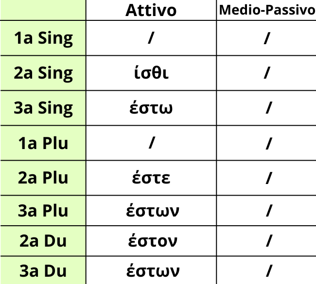

Qui sopra è riportata la tabella per l'imperativo presente del verbo ειμί.
Ricorda che la terza persona singolare non è enclitica.
Memorizza bene queste forme poiché sono sempre quelle più infide e difficili.